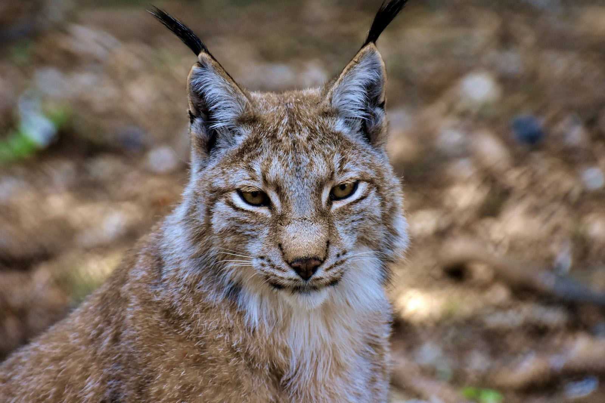
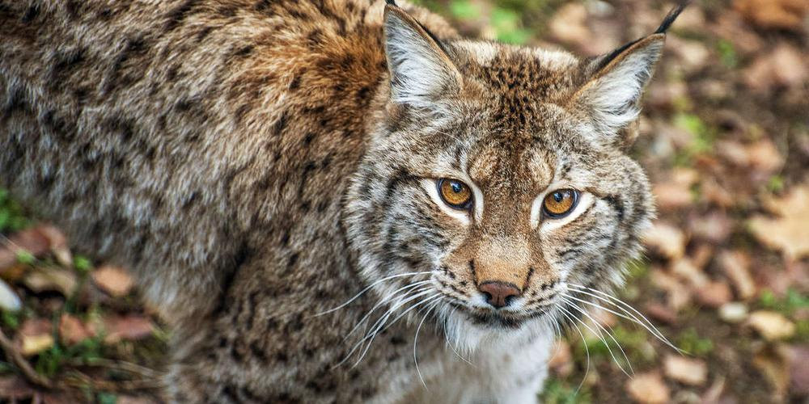
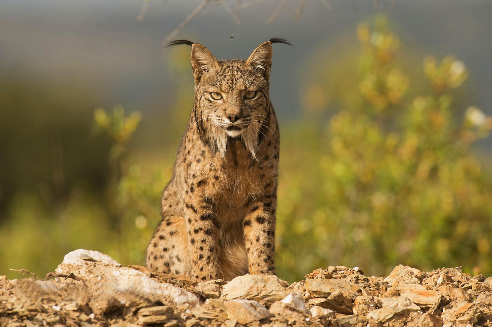
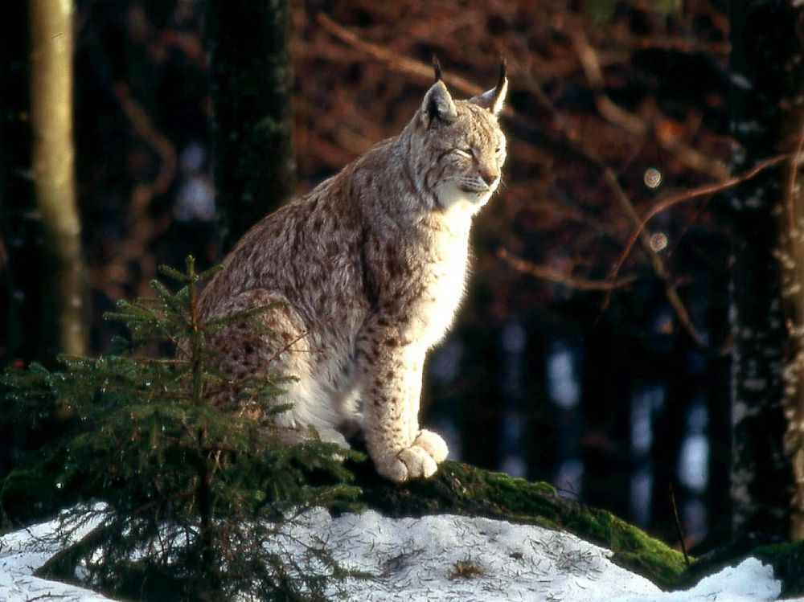
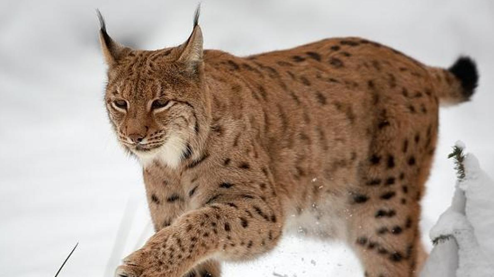
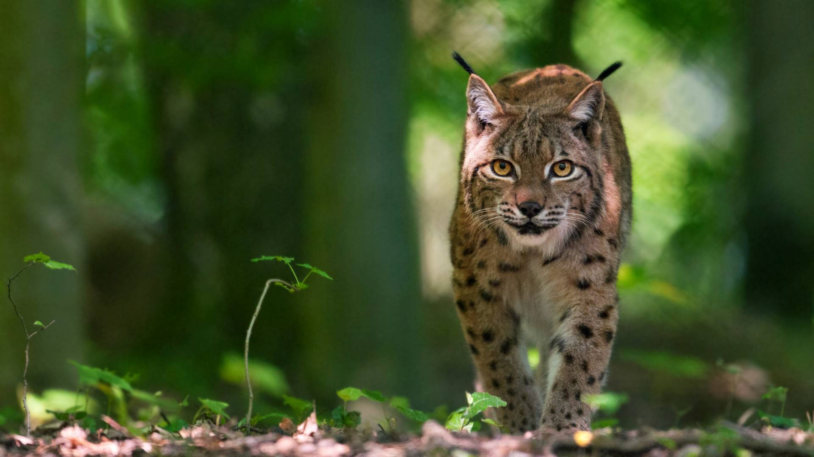

|
Le lynx boréal ou loup-cervier est un Félin dont la fourrure mouchetée de taches noires, adopte une teinte variable variant du blanc crème au brun roux. Le poil est très dense pour lui permettre de supporter les grands froids. La face est ornée d'un collier de longspoils et les oreilles triangulaires sont surmontées de pinceaux noirs. Des rayures verticales barrent le front et un trait sombre barre chaque joue. La queue est courte et se termine par un manchon de poils noirs. Les pattes sont longues et fines mais les pieds larges, adaptés comme des raquettes, aux déplacements dans la neige. |
 |
|  |
Habitat du Lynx BoréalOn trouve le lynx boréal dans les zones de forêts tempérées et boréales composées de sous-bois denses depuis la Scandinavie jusqu'en Sibérie et même en Chine du Nord. À l'heure actuelle, bien qu'il fréquente les steppes, il trouve principalement refuge dans les montagnes. |
Comportement du Lynx BoréalLe lynx est un animal solitaire qui chasse dès la tombée du jour jusqu'à l'aube. Il peut parcourir une vingtaine de kilomètres par nuit pour trouver sa subsistance. Son territoire, dont la superficie varie de 20 à 300 km², peut recouvrir celui de plusieurs femelles. À l'instar d'autres Félins, il le marque avec des griffures, son urine et ses fèces. C'est un animal extrêmement discret même lors de ses vocalises. En journée, il se repose dans une cache. |
 |
|  |
Reproduction du Lynx BoréalLa période de reproduction s'étend des mois de janvier à avril. La femelle n'a qu'un seul œstrus de quatre à sept jours durant ces quelques semaines. Les petits, au nombre de un à quatre, naissent aveugles dans une tanière garnie de plumes, de poils ou d'herbe sèche, au terme d'une gestation de 60 à 75 jours. Leurs yeux s'ouvrent au bout d'une douzaine de jours et bien qu'ils soient en mesure d'ingérer des aliments solides à 6 ou 7 semaines, ils allaitent leur mère pendant cinq à six mois. Leur pelage adopte la coloration adulte au bout de trois mois. Les petits restent avec leur mère jusqu'à la saison de reproduction suivante. Le lynx eurasien atteint sa maturité sexuelle vers 2 ou 3 ans. |
Régime alimentaire du Lynx BoréalPar sa taille, le lynx boréal est le seul lynx à chasser le chevreuil, le chamois, le renne ou même le sanglier. Il ne dédaigne pas non plus les lièvres, les oiseaux et les petits rongeurs et peut s'en prendre occasionnellement aux renards, aux blaireaux et à divers mustélidés. |
 |
|  |
Menaces sur le Lynx BoréalLe lynx était commun dans toute l'Europe jusqu'au XIXe siècle. L'accroissement de la population et la chasse l'on éradiqué de notre territoire à cette époque, bien avant le loup et l'ours. Le félin apparaît en Annexe II de la CITES depuis 1977 mais n'est classé qu'en « préoccupation mineure » par l'UICN en raison de sa large distribution. De même que l'ours des Pyrénées n'est pas considéré comme une espèce d'ours brun, les petites populations de lynx réintroduites dans le Jura, les Alpes suisses et dans d'autres pays européens, ne constituent pas non plus des espèces à part entière. |